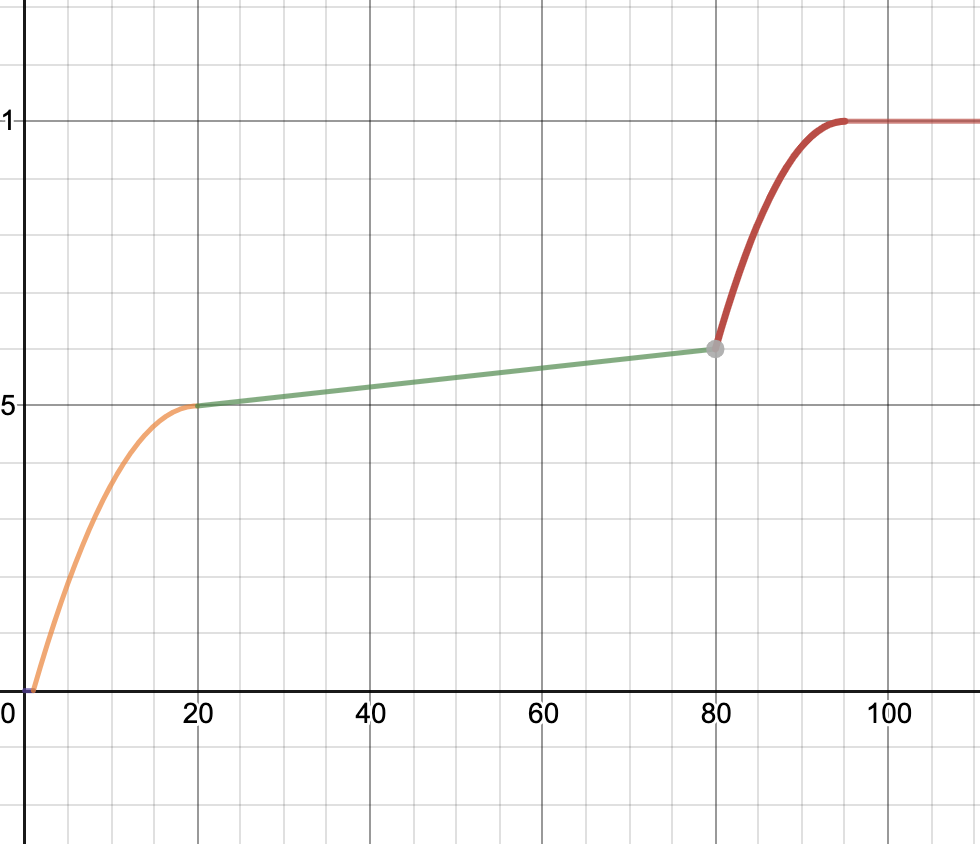
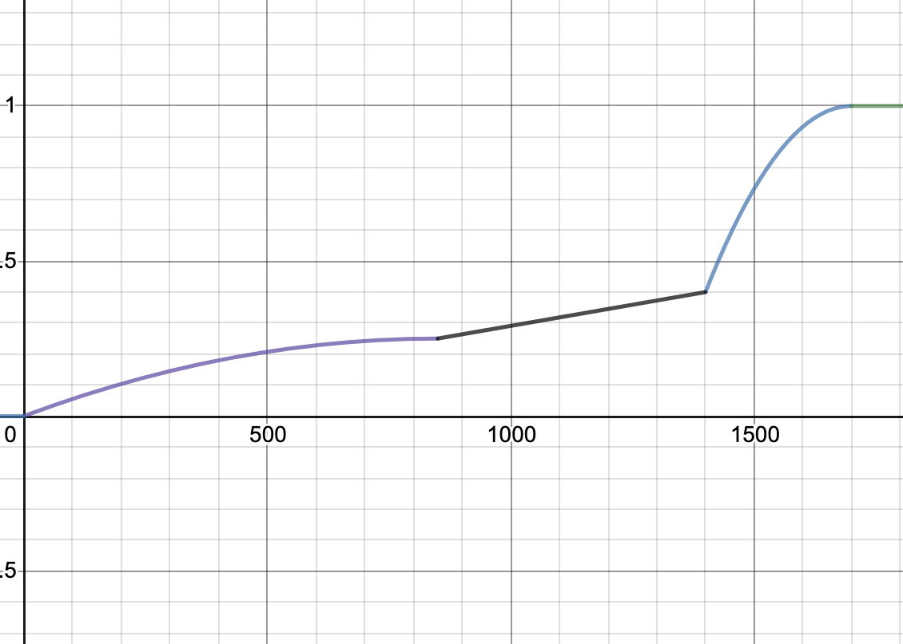
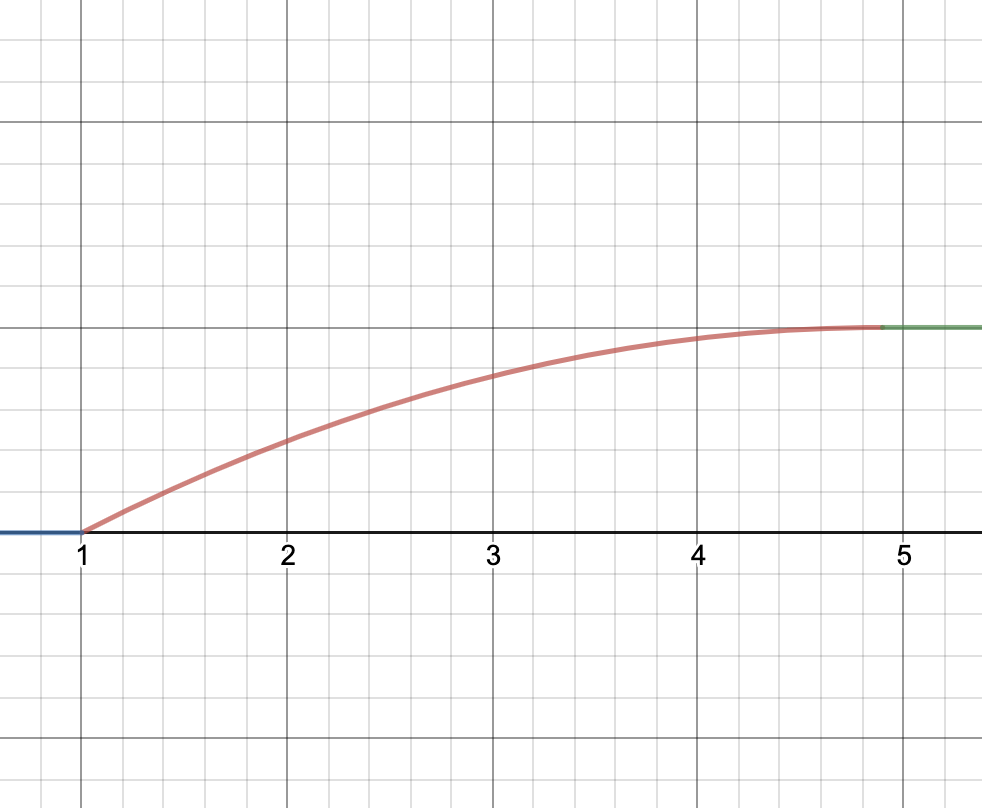
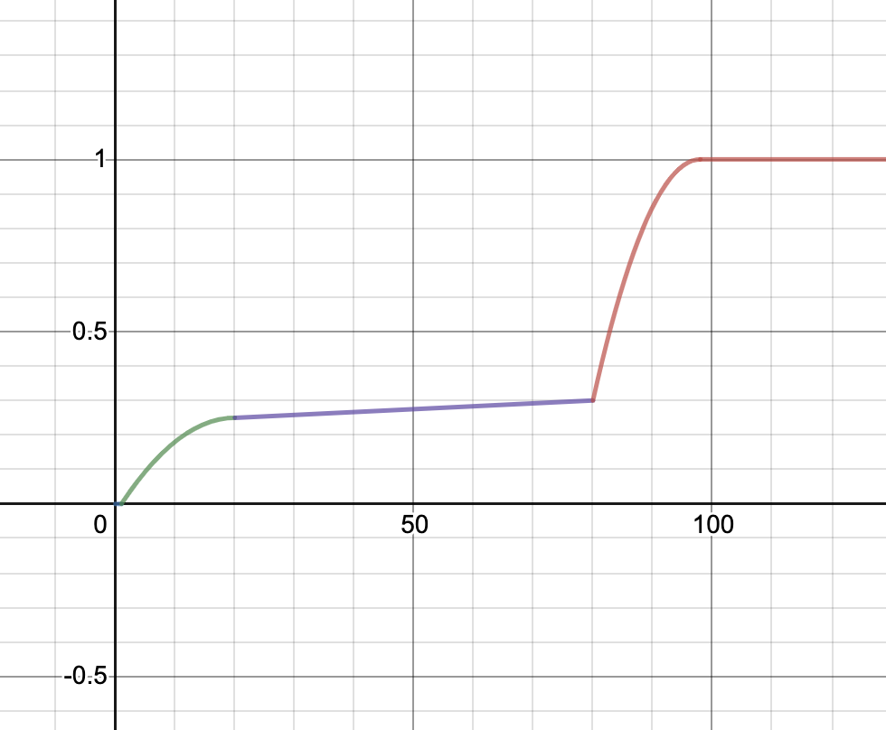

Due Wednesday, December 4th
This project is designed to be both a C project as well as a performance project. In this project you will be implementing a slower version of numpy. Your version of numpy, numc (how exciting!), is most likely to be slower than numpy, but much faster than the naive implementations of matrix operations. You will first complete a naive solution for some matrix functions in C, then you will experiment with the setup file in Python to install your numc module. After that, you will gain a deeper understanding of the Python-C interface by overloading some operators and defining some instance methods for numc.Matrix objects. Finally, you will speed up your naive solution, thus making numc.Matrix operations faster.
Do not expect your final completed numc module to be as good as numpy, but you should expect a very large speedup compared to the naive solution, especially for matrix multiplication and exponentiation!
Here is a list of all the important clarifications!! For each new clarification we make, it will be reflected both in that post and the spec.
numc.c or matrix.c.matrix.h and matrix.c as you deem appropriate, but you may not change the function signatures in numc.h and numc.c.numc.c.dumbpy library on hive as we have already installed it there for you!Ssh into one of the hive machines under your cs61c class account.
Please follow the directions in this Google Form to get a repository: https://docs.google.com/forms/d/e/1FAIpQLSc59h0HsJLPfhqbJ8hil01lrfIvK0xTPxTihB1C3KfpmkGc2Q/viewform. After completing the form, clone your GitHub Classroom repository and add the starter code repository as a remote:
$ git clone YOUR_REPO_NAME
$ cd YOUR_REPO_NAME
$ git remote add starter https://github.com/61c-teach/fa20-proj4-starter.git
If we publish changes to the starter code, retrieve them using git pull starter master.
To be able install the modules that you will complete in this project, you must create a virtual environment with by running
$ python3.6 -m venv .venv
Note that you MUST use python 3.6 as our reference module dumbpy only supports this specific version of python.
Finally, run the following command to activate the virtual environment:
$ source .venv/bin/activate
This will put you in a virtual environment needed for this project. Please remember that if you exit the virtual environment and want to return to work on the project, you must re-run source .venv/bin/activate. This also means every time you re-ssh into the hive, you will have to re-run source .venv/bin/activate.
Then, run
pip3 install -r requirements.txt
in the virtual environment. This will install all python packages you need for running your custom python tests.
Finally, if you have to exit out of the virtual environment, you can do so by running:
$ deactivate
We already have the reference library dumbpy installed for you on Hive machines. You can import it with or without the virtual environment while using python3.6, and all object and function names are the same as the numc module that you will implement (please refer to Task 3). You will only be able to access the dumbpy package on hive as we will not be directly releasing it. You can use it as a reference for both correctness and speed.
Again, for this project, we strongly suggest working on Hive machines in your cs61c class account. You will not be able to import dumbpy if you are using other class accounts. We may be unable to help you with issues caused by working outside of the Hive.
For this task, you will need to complete all functions in matrix.c labelled with
/* TODO: YOUR CODE HERE */. The comments above each function signature in matrix.c contain instructions on how to implement the functions, so read them carefully before you start coding.
The matrix struct is defined in matrix.h. Feel free to change it, but make sure your changes are compatible with our starter code.
typedef struct matrix {
int rows; // number of rows
int cols; // number of columns
double **data; // each element is a pointer to a row of data
int is_1d; // Whether this matrix is a 1d matrix
// For 1D matrix, shape is (rows * cols)
int ref_cnt;
struct matrix *parent;
} matrix;
rows is the number of rows of this matrix, cols is the number of columns, and data is a 2D representation of the matrix data. ref_cnt is the number of existing matrix structs (including itself) that share all or part of the data array with this particular matrix struct. is_1d is non-zero if the number of rows is 1 or the number of columns is 1. parent indicates whether this matrix struct is a slice of another matrix, and should be set to its parent matrix struct if it is and NULL otherwise.
matrix.h also imports the library Python.h, but for this part you should not need any other functions besides PyErr_SetString.
Depending on your implementation of matrix.c and numc.c, you may or may not assume that result is already preallocated or that all inputs’ dimensions are valid. However, as mentioned in the Tips and Guidelines section, your Python number methods will need to handle the case where matrix allocation fails.
Again, you may change any function signature in matrix.h and matrix.c.
Important notes:
allocate_matrix or allocate_matrix_ref fails to allocate space, or a value error if you are trying to allocate matrices with non-positive dimensions! Otherwise you would have to make sure that a runtime/value error will be thrown in numc.c whenever we run out of memory. This includes throwing an error in Matrix61c_init.is_1d field when initializing matrices in allocate_matrix or allocate_matrix_ref!. Since 1D matrices are printed out differently than 2D, autograder tests may fail if is_1d is not set correctly.deallocate function as well as the ref_cnt field in the matrix struct have caused a lot of confusions in the past semesters. It is important to remember that this ref_cnt is NOT Python’s internal reference count. It is simply a field that will help you implement the deallocate function. It does not have to reflect the true reference count if you deem that setting it to other values will simplify your implementation of deallocate.deallocate function, since there can be multiple matrices that refer to the same data array in the memory, you must not free the data until you call deallocate on the last existing matrix that refers to that data. If you are having some difficulties implementing this, here’s a hint: you can keep the matrix struct in the memory even if you have already called deallocate on that matrix. You only need to make sure to that the struct is freed once the last matrix referring to its data is deallocated.
We’ve provided some sanity in mat_test.c. These tests make several assumptions:
matrix struct in matrix.hget and set assume that your get and set are correctViolation of one or more of these assumptions may not cause your tests to fail, but please keep this in mind if your tests are failing and you are violating at least one of these assumptions.
To run the CUnit tests, run
$ make test
in the root folder of your project. This will create an executable called test in the root folder and run it.
By default, CUnit will run these tests in Normal mode. When debugging a specific issue, it may be helpful to switch to Verbose mode, which can be done by commenting and uncommenting the relevant lines in mat_test.c:
// CU_basic_set_mode(CU_BRM_NORMAL);
CU_basic_set_mode(CU_BRM_VERBOSE);
Make sure that one line is uncommented at a time.
Please keep in mind that these tests are not comprehensive, and passing all the sanity tests does not necessarily mean your implementation is correct. This is especially true with the memory functions allocate_matrix, allocate_matrix_ref, and deallocate_matrix. Also keep in mind that the autograder will be using our own set of sanity tests. We will not directly test your C code, and will not be running your CUnit tests.
Another thing to note is that the Makefile is written for compilation on the hive machines. If you wish to run it locally, you will have to modify the Makefile by replacing the path to your CUnit/Python libraries in your CUNIT and PYTHON variables. You will also need to make sure that your local computer supports AVX extensions and OpenMP.
Finally, you are welcomed to modify mat_test.c to implement your custom test cases.
The setup.py file is used for installing your custom-built modules. After completing it, you should be able to install numc by simply running:
$ make
This will uninstall your previously installed numc module if it existed and reinstall numc. We have written numc.c so that numc.Matrix will be initialized and ready to import upon succesful installation of the numc module. You should rerun make every time you make changes and want them to be reflected in the numc module.
You can uninstall your numc module by running
$ make uninstall
We have provided you with the compiler and linker flags in setup.py, and your task is to find out how to use them to build your module.
You will likely get a lot of warnings about functions being defined but not used, and that’s ok! You should ignore these warnings for now, and they will be gone after you finish writing Task 3.
Remember that you must be in the virtual environment that you set up in order to install the modules, otherwise you will get a “Read-only file system” error.
READ FIRST: take a look at the function distutils.core.setup (https://docs.python.org/3.6/distutils/apiref.html), and here is an example usage. If the documentation seems too difficult to understand, it is a good idea to take a look at the example first. You only need two function calls to complete this section, if you’re doing more than that, please reread the docs included as you’re likely doing something wrong
Now that you have successfully installed your numc module, you can import your numc.Matrix objects in Python programs! Here are some ready-to-use features already implemented for numc.Matrix objects. You might find them helpful when debugging Task 3.
numc.MatrixHere are several ways of importing numc.Matrix
from numc import Matrix
import numc
numc.Matrix
import numc as nc
nc.Matrix
numc.Matrix initializationHere are all the different ways of creating a numc.Matrix object.
>>> import numc as nc
CS61C Fall 2020 Project 4: numc imported!
>>> nc.Matrix(3, 3) # This creates a 3 * 3 matrix with entries all zeros
[[0.0, 0.0, 0.0], [0.0, 0.0, 0.0], [0.0, 0.0, 0.0]]
>>> nc.Matrix(3, 3, 1) # This creates a 3 * 3 matrix with entries all ones
[[1.0, 1.0, 1.0], [1.0, 1.0, 1.0], [1.0, 1.0, 1.0]]
>>> nc.Matrix([[1, 2, 3], [4, 5, 6]]) # This creates a 2 * 3 matrix with first row 1, 2, 3, second row 4, 5, 6
[[1.0, 2.0, 3.0], [4.0, 5.0, 6.0]]
>>> nc.Matrix(1, 2, [4, 5]) # This creates a 1 * 2 matrix with entries 4, 5
[4.0, 5.0]
More specifically:
nc.Matrix(rows: int, cols: int) will create a matrix with rows rows and cols cols. All entries in this matrix are defaulted to 0.nc.Matrix(rows: int, cols: int, val: float/int) will create a matrix with rows rows and cols cols. All entries in this matrix will be initialized to val.nc.Matrix(rows: int, cols: int, lst: List[int/float]) will create a matrix with rows rows and cols cols. lst must have length rows * cols, and entries of the matrix will be initialized to values of lst in a row-major order.nc.Matrix(lst: List[List[int/float]]) will create a matrix with the same shape as the 2D lst (i.e. each list in lst is a row for this matrix).The matrices and vectors have an attribute shape. For a 2D matrix, it is a tuple of (rows, cols). For a 1D matrix, it is a one-element tuple of (number of elements, )
Example is given below.
>>> import numc as nc
CS61C Fall 2020 Project 4: numc imported!
>>> mat = nc.Matrix(3, 3)
>>> mat.shape
(3, 3)
>>> mat = nc.Matrix(3, 1)
>>> mat.shape
(3,)
Because 1D matrices’ shapes are tricky, we are NOT testing matrix operations on your 1D matrices.
Here is the link to the full reference manual: https://docs.python.org/3.6/c-api/index.html. If you ever find anything confusing in the skeleton code or are at a lost on how to implement numc.c, this is a great resource.
numc skeleton codeWe define the Matrix61c struct in numc.h. It is of type PyObject (this means you can always cast Matrix61c to PyObject, but not vice versa), which according to the official documentation, “contains the information Python needs to treat a pointer to an object as an object”. Our Matrix61c has the matrix struct we defined in matrix.h.
Then we define a struct PyTypeObject named Matrix61cType to specify the intended behaviors of our Python object Matrix61c. This struct will then be initialized to be our numc.Matrix objects.
static PyTypeObject Matrix61cType = {
PyVarObject_HEAD_INIT(NULL, 0)
.tp_name = "numc.Matrix",
.tp_basicsize = sizeof(Matrix61c),
.tp_dealloc = (destructor)Matrix61c_dealloc,
.tp_repr = (reprfunc)Matrix61c_repr,
.tp_as_number = &Matrix61c_as_number,
.tp_flags = Py_TPFLAGS_DEFAULT |
Py_TPFLAGS_BASETYPE,
.tp_doc = "numc.Matrix objects",
.tp_methods = Matrix61c_methods,
.tp_members = Matrix61c_members,
.tp_as_mapping = &Matrix61c_mapping,
.tp_init = (initproc)Matrix61c_init,
.tp_new = Matrix61c_new
};
For example, .tp_dealloc tells Python which function to call to destroy a numc.Matrix object when its reference count becomes 0, and .tp_members tells Python what instance attributes numc.Matrix objects have. You can take a look at the official documentation if you are curious.
Here is a list of some functions and Python objects from <Python.h> that you may find useful. You can also choose any other functions at this link.
Now you are ready to complete numc.c, the Python-C interface! As before, you will need to fill out all functions and variables labeled /* TODO: YOUR CODE HERE */. The code for initializing the module numc and the object type numc.Matrix is already done for you. Although not required, we encourage you to take a look at the existing code to better understand the interface.
Below are the three main parts for this task.
Note: For each of the function below, we specify when you should throw each type of error. For any errors not specified, throw a runtime error.
For this part, we ask you to overload operators for numc.Matrix objects. Here are the expected behaviors of overloaded operators:
a + b: Element-wise sum of a and b. Returns a numc.Matrix object.
TypeError if b is not of type numc.Matrix.ValueError if a and b do not have the same dimensions.a - b: Element-wise subtraction of a and b. Returns a numc.Matrix object.
TypeError if b is not of type numc.Matrix.ValueError if a and b do not have the same dimensions.a * b: Matrix multiplication of a and b. Returns a numc.Matrix object. Remember that this is a matrix multiplication, not an element-wise multiplication.
TypeError if b is not of type numc.MatrixValueError if a’s number of columns is not equal to b’s number of rows.-a: Element-wise negation of a. Returns a numc.Matrix object.abs(a): Element-wise absolute value of a. Returns a numc.Matrix object.a ** pow: Raise a to the powth power. a to the 0th power is the identity matrix (1 on the top left to bottom right diagonal and 0 everywhere else). Returns a numc.Matrix object. This operator is defined in terms of matrix multiplication, not element-wise multiplication.
TypeError if pow is not an integer.ValueError if a is not a square matrix or if pow is negative.Please note that for all these operations above, you must never directly modify the matrix that you pass in. You always make a new numc.Matrix object to hold your result, so make sure you set the shape attribute of the new numc.Matrix. You can use Matrix61c_new to create new numc.Matrix objects. For your convenience, here’s an example of how you create a numc.Matrix.
/* Assume new_mat is a matrix struct */
Matrix61c *rv = (Matrix61c *) Matrix61c_new(&Matrix61cType, NULL, NULL);
rv->mat = new_mat;
/* Set the shape of this numc.Matrix */
rv->shape = ...;
For all the functions above, throw a runtime error if any error occurs (such as matrix allocation failure) and causes the operation to fail. Moreover, for any operations that involve two instances of numc.Matrix, you will have to make sure that the second instance b is indeed of type numc.Matrix as we do not support operations between numc.Matrix and other data/object types. Please read the comments in numc.c carefully.
Here is a table that tells you which function in numc.c in which you will implement each of the above operators
| Operator | Function |
|---|---|
| + | Matrix61c_add |
| - (subtraction) | Matrix61c_sub |
| * | Matrix61c_multiply |
| - (negation) | Matrix61c_neg |
| abs() | Matrix61c_abs |
| ** | Matrix61c_pow |
All these functions will be called through a Python-C interface after you complete the numc module. In other words, these are the functions that will be called when you do matrix operations with numc.Matrix objects, and these interface methods will call matrix.c methods that you just implemented. You will have to check for the validity of the dimensions before actually carrying out the arithmetic, and throw an error if needed. Specifically, throw a value error if the arguments’ dimensions are invalid, and a runtime error if any memory allocation fails during execution. Again, depending on your implementation, these error checks could either be in matrix.c or numc.c
After you implement all the functions above, you will need to fill out the struct Matrix61c_as_number, which is used to define the object type numc.Matrix.
Here is the link to the official documentation of a PyNumberMethods struct: https://docs.python.org/3/c-api/typeobj.html#c.PyNumberMethods
You will implement two instance methods for numc.Matrix:
set(self, i, j, val): Set self’s entry at the ith row and jth column to val.
TypeError if the number of arguments parsed from args is not 3, if i and j are not integers, or if val is not a float or int.IndexError if i or j or both are out of range.get(self, i, j): Returns the entry at the ith row and jth column. Throw a type error if the number of arguments parsed from args is not 2 or if the arguments are of the wrong types. Throw an index error if either i, j, or both are out of range. Return value is a Python float.
TypeError if the number of arguments parsed from args is not 2 or if either i or j is not an integer.IndexError if i or j or both are out of range.These functions will call get and set in matrix.c to actually get or set the value. Again, you can throw errors either in numc.c or matrix.c.
Here is a table that tells you which functions in numc.c in which you will implement each of the above instance methods
| Python method | C Function |
|---|---|
set |
Matrix61c_set_value |
get |
Matrix61c_get_value |
After you implement all the functions above, you will need to fill out the array of PyMethodDef structs Matrix61c_methods, which is used to define the object type numc.Matrix.
This link tells you what goes into a PyMethodDef struct: https://docs.python.org/3/c-api/structures.html
After finishing this part, you should be able to index into a matrix and change either the value of one single entry or a slice. You will need to complete the following two functions:
static PyObject *Matrix61c_subscript(Matrix61c *self, PyObject *key)
numc matrix and the key to index into the matrix. For a 2D matrix, the key could either be an integer, a single slice, or a tuple of two slices/ints. For a 1D matrix, the key could either be an integer or a single slice. Below we provide an example for each case.
>>> import numc as nc
CS61C Fall 2020 Project 4: numc imported!
>>> a = nc.Matrix(3, 3)
>>> a[0] # Key is a single number
[0.0, 0.0, 0.0]
>>> a[0:2] # key is a single slice
[[0.0, 0.0, 0.0], [0.0, 0.0, 0.0]]
>>> a[0:2, 0:2] # key is a tuple of two slices
[[0.0, 0.0], [0.0, 0.0]]
>>> a[0:2, 0] # key is a tuple of (slice, int)
[0.0, 0.0]
>>> a[0, 0:2] # key is a tuple of (int, slice)
[0.0, 0.0]
>>> a[0, 0] # key is a tuple of (int, int)
0.0
>>> b = nc.Matrix(1, 3) # b is a 1D matrix
>>> b[0]
0.0
>>> b[0:2] # Number of rows/cols does not matter now. You are slicing it as if it were a list
[0.0, 0.0]
>>> b[0:1, 0:1] # This is invalid!
Traceback (most recent call last):
File "<stdin>", line 1, in <module>
TypeError: 1D matrices only support single slice!
>>> import numc as nc
CS61C Fall 2020 Project 4: numc imported!
>>> a = nc.Matrix(3, 3)
>>> a[0][1]
0.0
>>> a[0:1, 0:1]
0.0
key is an integer, then mat[key] should return the keyth element of the matrix. If key is a single slice with start and stop, then mat[start:stop] should return another 1D matrix with stop - start elements. For example
>>> import numc as nc
CS61C Fall 2020 Project 4: numc imported!
>>> a = nc.Matrix(3, 1, [1, 2, 3])
>>> a[0]
1.0
>>> b = nc.Matrix(1, 3, [1, 2, 3])
>>> b[0]
1.0
>>> a[1:3]
[2.0, 3.0]
>>> b[1:3]
[2.0, 3.0]
TypeError if key is not an integer, a slice, or a length-2 tuple of slices/ints. If matrix is 1D, TypeError if key is not an integer or a slice.ValueError if key is a slice or a tuple that has one or more slices, and that at least one of these slices has step size not equal to 1, or if the length of slice is < 1. Here we provide an example for each error case to help you better understand them.
>>> import numc as nc
CS61C Fall 2020 Project 4: numc imported!
>>> a = nc.Matrix(4, 4)
>>> a[0:4:2] # Step size != 1
Traceback (most recent call last):
File "<stdin>", line 1, in <module>
ValueError: Slice info not valid!
>>> a[0:0] # Slice has length < 1
Traceback (most recent call last):
File "<stdin>", line 1, in <module>
ValueError: Slice info not valid!
IndexError if key is an integer but is out of range, or if key is a tuple with at least one integer in it, and the integer is out of range.static int Matrix61c_set_subscript(Matrix61c *self, PyObject *key, PyObject *v)
numc matrix, the key key to index into the matrix, and the value v to which to set the new slice. Again, the key could either be an integer, a single slice, or a tuple of two slices/ints. If the resulting slice after indexing is 1 by 1, then v should be an integer or a float. If it is an 1D matrix (1 by n or n by 1), then v should be a list of numbers, and each number can either be int or float, and the length of the list should be the same as the number of elements of this slice. If it is 2D, then v should be a 2D list where the ith element of this list is a 1D list of integers/floats to set the ith row of the slice. Below we provide an example for each case.
>>> import numc as nc
CS61C Fall 2020 Project 4: numc imported!
>>> a = nc.Matrix(3, 3)
>>> a[0:1, 0:1] = 0.0 # Resulting slice is 1 by 1
>>> a[:, 0] = [1, 1, 1] # Resulting slice is 1D
>>> a
[[1.0, 0.0, 0.0], [1.0, 0.0, 0.0], [1.0, 0.0, 0.0]]
>>> a[0, :] = [2, 2, 2] # Resulting slice is 1D
>>> a
[[2.0, 2.0, 2.0], [1.0, 0.0, 0.0], [1.0, 0.0, 0.0]]
>>> a[0:2, 0:2] = [[1, 2], [3, 4]] # Resulting slice is 2D
>>> a
[[1.0, 2.0, 2.0], [3.0, 4.0, 0.0], [1.0, 0.0, 0.0]]
Matrix61c_subscript), you will also have to throw
TypeError if
v is not a float or int.v is not a list.ValueError if
v has the wrong length, or if any element of v is not a float or int.v has the wrong length, or if any element of v has the wrong length, or if any element of an element of v is not a float or int.We suggest that you use PySlice_GetIndicesEx to extract the slices’ information. Here is the link to the documentation of this function. Moreover, you should note that slices share data with their original matrix. This means that by changing values of the slices, the values of the original matrices should also change. Here are some examples.
>>> import numc as nc
CS61C Fall 2020 Project 4: numc imported!
>>> a = nc.Matrix(2, 2)
>>> a[0:1, 0:1] = 1.0
>>> a
[[1.0, 0.0], [0.0, 0.0]]
>>> a[1] = [2, 2]
>>> a
[[1.0, 0.0], [2.0, 2.0]]
>>> b = a[1]
>>> b[1] = 3
>>> a
[[1.0, 0.0], [2.0, 3.0]]
Also note that it is possible to have nested slices, and changing the nested slices’ data should also change the original matrices’ data. For example,
>>> import numc as nc
CS61C Fall 2020 Project 4: numc imported!
>>> a = nc.Matrix(4, 4)
>>> b = a[0:3, 0:3]
>>> c = b[1:3, 1:3]
>>> c[0] = [2, 2] # Changing c should change both a and b
>>> c
[[2.0, 2.0], [0.0, 0.0]]
>>> b
[[0.0, 0.0, 0.0], [0.0, 2.0, 2.0], [0.0, 0.0, 0.0]]
>>> a
[[0.0, 0.0, 0.0, 0.0], [0.0, 2.0, 2.0, 0.0], [0.0, 0.0, 0.0, 0.0], [0.0, 0.0, 0.0, 0.0]]
Now, if you didn’t fully understand what the deallocate function is supposed to do when you were implementation task 1, it is now a good time to go back and take another look at it.
Again, make sure to set the shape attribute of the new slice that you make!
Refer to this section for instructions on how to test your program.
To debug the Python-C interface, we suggest that you write your test files in Python, and use gdb or both gdb and pdb to debug.
You don’t have to use pdb if you do not wish to set breakpoints in your Python test file. Open your terminal and run
$ gdb python
Then you can set breakpoints in your C files using the normal gdb commands. gdb will warn you with
No source file named {your c file}
Make breakpoint pending on future shared library load? (y or [n])
Press ‘y’ (without the quotes) to proceed.
After that, you can run run {your python test file name}.py in gdb, and gdb will break at the breakpoints that you just set.
You will have to use pdb if you wish to set breakpoints in your Python file. Here’s how it works. Start gdb by running
$ gdb python3
and set your breakpoints in C (see previous section). Then you will need to run in gdb
run -m pdb {your python file}.py
After this step, you can set breakpoints in your Python file using gdb syntax (for example, b test.py:5). With this approach, your debugger will switch between pdb and gdb depending on whether you are stepping through a Python file or a C file.
Now that you have completed the three steps above and successfully installed your naive version of numc, it’s time to speed up your matrix functions in matrix.c! As of now, we are only testing PERFORMANCE on non-slice matrices. Although we ARE testing the correctness of matrix operations on matrix slices.
Below we outline some steps for boosting performance.
You should first try to speed up the computation by trying to apply conventional code optimizations (i.e. without using SSE or OpenMP). While we won’t tell you the exact steps, here are some hints that should help you get started:
Note that the above hints relate to general optimization practices. You do not necessarily need to do all of these to achieve a good speedup.
Once you have improved performance using these optimizations, you can start applying vectorization and parallelization to make the program even faster. Note that you have considerable freedom to apply any of these optimizations, and there is more than one correct solution. Try to experiment with different approaches and see which one gives you the best performance.
From lectures, you learned how to apply SIMD instructions to improve performance. The processors in the hive machines support the Intel AVX extensions, which allow you to do SIMD operations on 256 bit values (not just 128 bit, as we have seen in the lab). You should use these extensions to perform four operations in parallel (since all floating point numbers are doubles, which are 64 bit in size). If you are unfamiliar with SIMD instructions, lab 9 can be a good warmup.
As a reminder, you can use the Intel Intrinsics Guide as a reference to look up the relevant instructions. You will have to use the __m256d type to hold 4 doubles in a YMM register, and then use the _mm256_* intrinsics to operate on them.
Here is a list of AVX instructions that you may find helpful, although you are also allowed to use other AVX instructions not on the list.
void _mm256_storeu_pd (double * mem_addr, __m256d a)
__m256d _mm256_set1_pd (double a)
__m256d _mm256_set_pd (double e3, double e2, double e1, double e0)
__m256d _mm256_loadu_pd (double const * mem_addr)
__m256d _mm256_add_pd (__m256d a, __m256d b)
__m256d _mm256_sub_pd (__m256d a, __m256d b)
__m256d _mm256_fmadd_pd (__m256d a, __m256d b, __m256d c)
__m256d _mm256_mul_pd (__m256d a, __m256d b)
__m256d _mm256_cmp_pd (__m256d a, __m256d b, const int imm8)
__m256d _mm256_and_pd (__m256d a, __m256d b)
__m256d _mm256_max_pd (__m256d a, __m256d b)
Finally you should use OpenMP to parallelize computation. Note that you will need to make sure that none of the different threads overwrites each others’ data. Just adding a #pragma omp parallel for may cause errors.
Note that the Hive machines have 4 cores with two hyperthreads each. This means that you should expect a speed-up of 4-8x (note that hyperthreads mean that two different threads execute on the same physical core at the same time; they will therefore compete for processor resources, and as a result, you will not get the same performance as if you were running on two completely separate cores).
Write up what you did in your README.md! While we do not have a specific format we are looking for, you should discuss what you did as a whole, the different python functions you implemented, what performance improvements you had, what were you surprised about, etc. More specifically, we want you to document your numc module and provide example usages. We expect a minimum of 6000 characters. This may seem like a lot, but documenting you’ve done actually takes quite a number of words, so just sufficiently covering all the things you did in the project should get you to the word count requirement.
Again, failure to complete this task may result in negative points, so make sure you do it or you will lose points!
We will not be grading your tests but we will NOT help you debug unless you have written a test which shows how your code is failing. This means just using the autograder to figure out your issues will not be acceptable for office hours.
We use unittest as the framework for testing and have provided a unittests folder that contains this framework for testing your python module. You should be familiar with unittest by now as you have had experience with it in project 2. Here is the official documentation for the standard Python unittest library.
unittests/unittests.py contains all the skeleton code for both correctness and performance tests, and unittests/utils.py has all the functions that you might need in order to write tests. We have provided some sample tests for you, but it is up to you to design and code up the tests. We will not be grading your tests.
As mentioned in Tips and Guidelines and Getting Started, we have installed the naive solution which we will be comparing against on hive! The python package is called dumbpy and you can import it like any other python library (so long as you are on hive)! Please note we will not be distributing this binary which means you must work on hive if you want to test with it. You should use this and the time package to determine how much you sped up your code.
unittests/utils.pydp_nc_matrix(*args, **kwargs)
dumbpy matrix and a numc matrix that are identical. *args and **kwargs will be used as the arguments to instantiate both matrices in the exact same format as you would instantiate a numc.Matrix. We provide some examples below.
>>> dp_mat, nc_mat = dp_nc_matrix(2, 2, 0)
>>> dp_mat
[[0.0, 0.0], [0.0, 0.0]]
>>> nc_mat
[[0.0, 0.0], [0.0, 0.0]]
>>> dp_mat, nc_mat = dp_nc_matrix([[1, 2, 3]])
>>> dp_mat
[[1.0, 2.0, 3.0]]
>>> nc_mat
[[1.0, 2.0, 3.0]]
rand_dp_nc_matrix(rows, cols, seed=0)
dumbpy matrix and a random numc matrix with seed. The two matrices are identical with rows rows and cols. seed is defaulted to 0.
>>>> dp_mat, nc_mat = rand_dp_nc_matrix(2, 2, seed=5)
>>> dp_mat
[[0.27474559623503386, 0.046467764790387715], [0.9927552244592249, 0.08003044504673706]]
>>> nc_mat
[[0.27474559623503386, 0.046467764790387715], [0.9927552244592249, 0.08003044504673706]]
cmp_dp_nc_matrix(dp_mat: dp.Matrix, nc_mat: nc.Matrix)
dp_mat has the same size of nc_mat and all corresponding elements are equal (within a margin of error).compute(dp_mat_lst: List[Union[dp.Matrix, int]],
nc_mat_lst: List[Union[nc.Matrix, int]], op: str)
op on these matrices. Note that op is a string. "add", "sub", "mul", "neg", "abs", and "pow" correspond to the operations +, -(subtraction), *, -(negation), and abs, respectively. This function will return whether the computed dumbpy matrix is equal to the computed numc matrix, as well as the speedup for this specific computation.
"neg" and "abs", each matrix list must only contain 1 matrix. For the binary operations, they must contain more than 1 matrix."pow", dp_mat_lst and nc_mat_lst should look like something like [Matrix(2, 2), 1].compute([a, b, c], [d, e, f], "add") where a, b, c, d, e, f are matrices, and the function will compute a + b + c and d + e + f.unittest $ python -m unittest unittests.py -v
will run all tests in unittests.py.
$ python -m unittest unittests.{classname} -v
For example, running
$ python -m unittest unittests.TestAdd -v
will only run the tests under the TestAdd class.
$ python -m unittest unittests.{classname}.{testname} -v
For example, running
$ python -m unittest unittests.TestAdd.test_small_add -v
will only run the test_small_add test.
make test, what is happening?
rm -f test
gcc -g -Wall -std=c99 -fopenmp -mavx -mfma -pthread -O3 mat_test.c matrix.c -o test -fopenmp -L/home/ff/cs61c/cunit/install/lib -I/home/ff/cs61c/cunit/install/include -lcunit -I/usr/include/python3.6 -lpython3.6m
./test
CUnit - A unit testing framework for C - Version 2.1-2
http://cunit.sourceforge.net/
Makefile:25: recipe for target 'test' failed
make: *** [test] Illegal instruction (core dumped)
A 1.2: This means your code segfaulted before any assert statements was reached and none of the tests passed. Use gdb to locate your bug.
mul_matrix(mat, mat, mat)../test?
A 1.5: You can try, but would not recommend. Setting up valgrind for C-Python interface can be difficult.mat1 = [[1,2,3],[4,5,6]], mat2 = mat1[0]. Can we do mat3 = mat2[0]?mat3 will just be a number and changing its value will not change mat2.undefined symbol: allocate_matrix_ref). What is happening?deallocate_matrix implementation. What happens when you call print(mat[0]) is that it will create a slice, then immediately deallocate it after this line.<class 'AttributeError'> -- shape.mat->shape<class 'SystemError'> -- <built-in method set of numc.Matrix object at 0x7f175faffef0> returned NULL without setting an error!NULL in any interface function.UnicodeDecodeError: ‘utf-8’ codec can't decode byte 0x89 in position 5: invalid start byte upon import. What’s wrong?{NULL, NULL, 0, NULL} from starter code must be last element of Matrix61c_methods, so make sure you don’t accidentally remove that!matrix.c?PyObject* args?#pragma omp parallel for above a simple for loop slows down my add_matrix drastically?warning: ignoring #pragma omp parallel [-Wunknown-pragmas] but I have not changed the Makefile?shape attribute of every returned matrix! 3. Please do NOT modify anything related to generating random matrices! Do NOT try to speed them up! We use those to generate matrices to test on the autograder. We don’t include the time for generating matrices when testing for performance.The grading breakdown for Project 4 is as follows:
Here are the graphs for the speedup tests. The x-axis is your speedup times and the y-axis indicates what percentage of that test’s total score you will receive.
| Multiplication | Power |
|---|---|
|  |  |
| Simple | Comprehensive |
|---|---|
|  |  |
Minimum speedup for 100% on each test:
Since we are running your submissions on hive, albeit reserved, speedup times may fluctuate a bit. You should try to go above the speedup value as we will rerun the ag after the deadline and your speedup may go up or down. We will not rerun submissions if they went down unless we made another change to the autograder.
We will only be using your matrix.h, matrix.c, numc.c, setup.py, and README.md for grading. Gradescope only shows you all the core correctness tests that are needed to run performance tests. Other tests will stay hidden until the late due date.
We are doing a performance contest for Project 4 this year! The method in which your Project 4 submission will be scored is based on the performance on your numc module. Note that while all submitted designs will show a score, only submissions that pass 100% of visible and hidden tests will be eligible for the contest. This means that it is in your best interest to test throughly!
We are still determining which benchmark(s) will be used in evaluating your solution and will update the spec once we have finalized that.